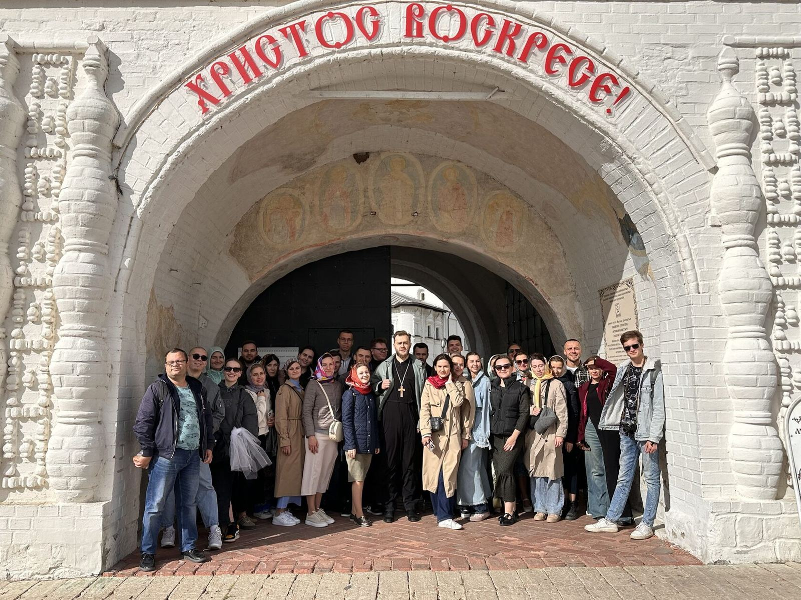
Поездка в Печоры
Паломничество молодёжного сообщества в Псково-Печерский монастырь — святыни, дорога и настоящее братское общение.
Дом для тех, кто ищет активной и радостной жизни во Христе. Здесь ты не зритель — ты часть большой семьи, которая вместе служит Богу и в которой главный закон — любовь.
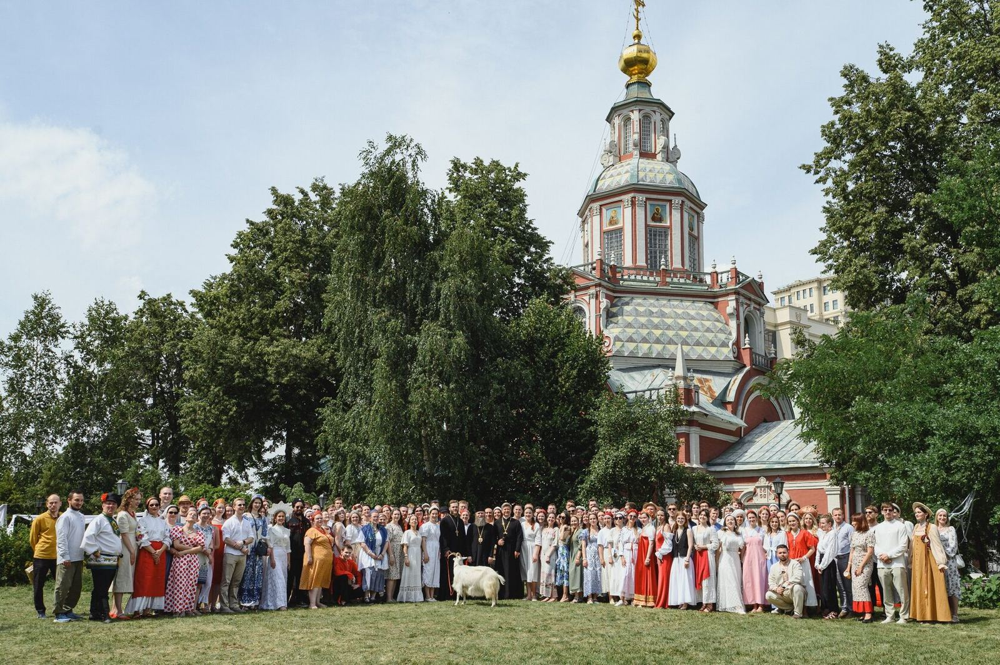
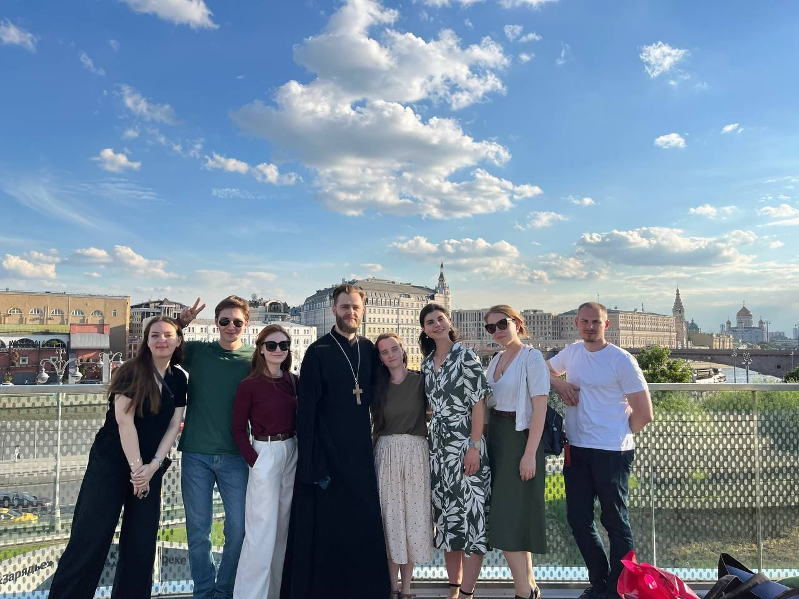
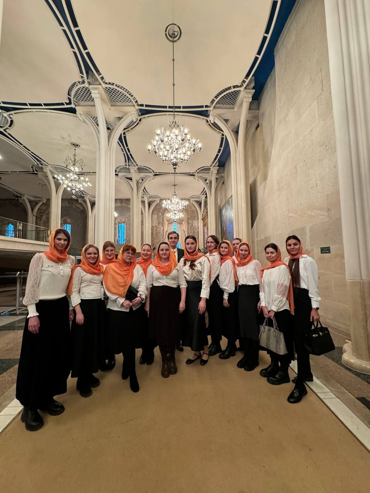
немного о нас
Пространство для духовного роста во Христе. Множество направлений — от милосердия и паломничеств до спорта, творчества и киноклуба. Здесь молодые люди находят занятия по душе и раскрывают свои таланты.
Мы помогаем друг другу приближаться к Богу через Священное Писание, богослужения, братское общение и совместные добрые дела. Мы ценим искренность, уважение и взаимопомощь — и радуемся, когда внутри сообщества зарождаются крепкие дружеские связи и создаются семьи, основанные на целомудрии и доверии.
По благословению настоятеля храма, епископа Павлово-Посадского Силуана, нас духовно окормляет священник Антоний Смирнов, а лидеры направлений — такие же молодые ребята, которые когда-то пришли сюда как гости. Наше дело — общее служение Богу и ближним.
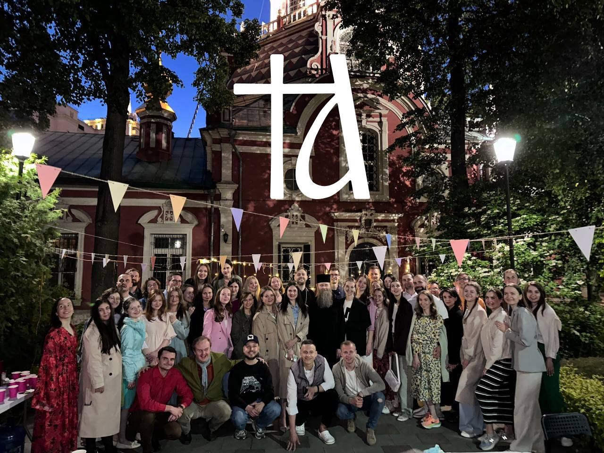
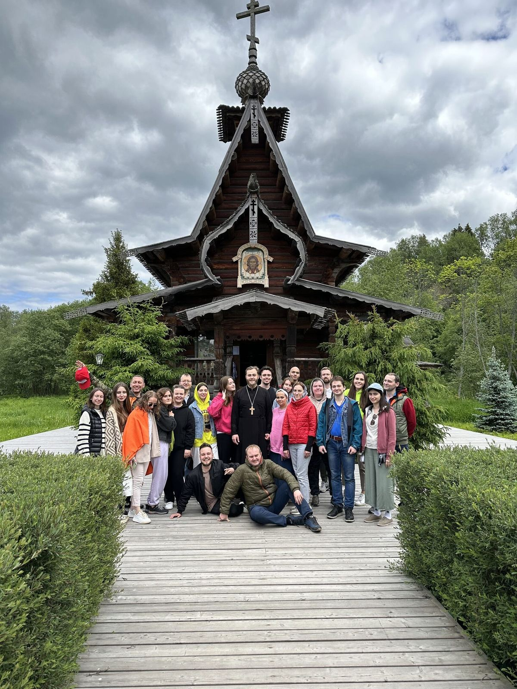
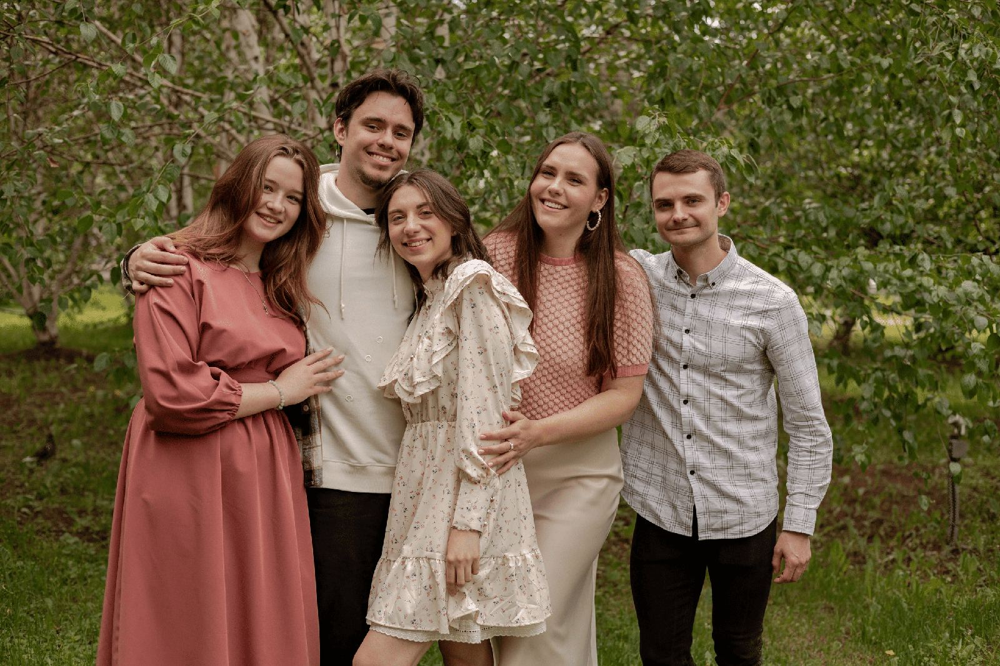
как мы живём

Паломничество молодёжного сообщества в Псково-Печерский монастырь — святыни, дорога и настоящее братское общение.
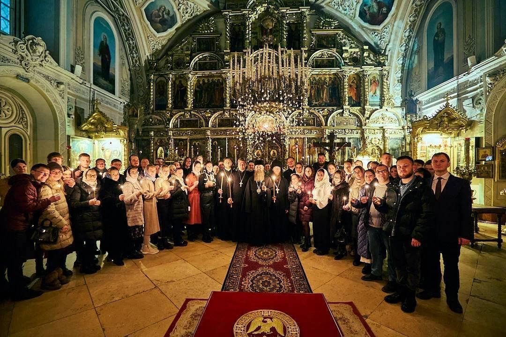
Особая молитва в тишине ночного храма — со свечами, хором и молодёжью сообщества КИМАНКА.
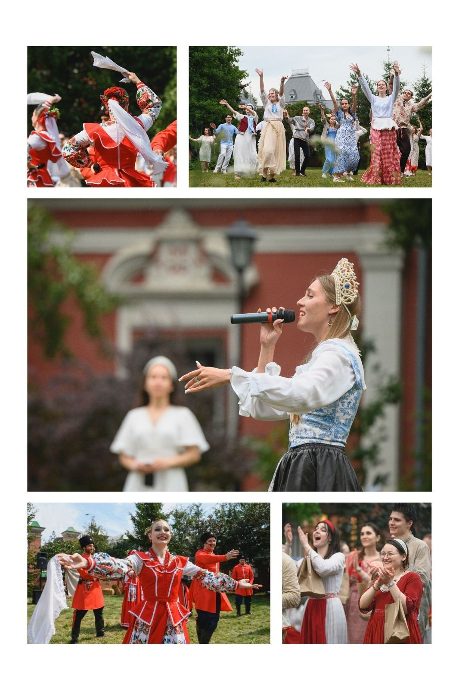
Народные костюмы, песни, танцы и угощения — большой праздник в саду у храма для всех друзей сообщества.
найди своё
Лидеры направлений — такие же молодые ребята, которые когда-то пришли сюда как гости.
Навещаем детей в больницах, заботимся о ребятах с особенностями развития, плетём маскировочные сети, готовим еду для бездомных — отвечаем на вопрос «чем я могу послужить Богу и ближним?» делами.
Сохраняем важные и памятные моменты жизни сообщества на плёнке. Заметить красоту и поделиться ею через экран камеры — основа нашего служения.
Паломнические и экскурсионные поездки: Печоры, Дивеево, Оптина, Лавра, Казань, Ярославль, Рязань — а в будущем, может быть, и весь мир!
Учимся петь Литургии и служить Богу голосом — среди спетого уже есть Патриаршая Литургия. Знание нот необязательно, научим!
Фирменный стиль, печатная продукция, сайт и соцсети. Верим, что красота и гармония в дизайне могут привлечь людей к Богу.
Беговые тренировки и любительские забеги, пляжный волейбол, футбол, коньки и прогулки на сапбордах по Москве-реке.
Культурный досуг и духовное просвещение: монастыри, музеи, театры, путешествия по святыням Москвы и уютные вечера за кино.
Рассказываем о жизни сообщества на всех платформах, ведь «самая лучшая проповедь — проповедь делом».
Раз в месяц смотрим и обсуждаем богатое смыслами кино — в свете православной веры и, конечно, с попкорном.
Читаем и обсуждаем вместе: от нравственно-религиозных писем Клайва Льюиса до христианских рассказов Чехова.
Молодёжный театр с профессиональным худруком. Рады актёрам, художникам, звукорежиссёрам и композиторам — при храме есть студия на 100 мест.
Вязание, украшения, гончарное дело, иллюстрация. Мастер-классы для всех и ярмарки — Рождественская и Пасхальная.
Разрабатываем социальные проекты и пишем заявки в фонды, чтобы жизнь православной молодёжи была насыщеннее на добрые события.
Кружок изучения творений святых отцов: читаем и обсуждаем в добром кругу, на встречи приглашаем лучших патрологов Москвы.
Любовь. Искусство. Команда. Организуем красивые события и встречи со спикерами — от «Тёплого вечера» до вечеров при свечах.
Готовим молодёжные православные вечеринки ко Дню православной молодёжи 15 февраля — с каждым годом всё круче.
Английский через Евангелие: читаем Новый Завет на английском, разбираем язык и учимся говорить о вере так, чтобы поняли в любой точке мира.
Огромная коллекция настольных игр на любой вкус: собираемся, думаем, смеёмся и становимся ближе друг другу.
Подобно ангелам-хранителям встречают новеньких: помогают освоиться, знакомят с направлениями и с заботой сопровождают каждого.
Пространство молодых семей: поддержка, обмен опытом, поездки с детьми и совместное участие в жизни храма.
Открываем красоту и духовную глубину классической музыки и оперы, вместе ходим в оперные театры Москвы.
Открытый микрофон о вере: учимся аргументированно говорить о своём уповании, слушать и слышать друг друга.
Приходи — вместе придумаем новое направление.
Присоединитьсянаш духовник
Ответственный за молодёжное служение в храме святого мученика Иоанна Воина на Якиманке. Духовно окормляет сообщество по благословению настоятеля храма — епископа Павлово-Посадского Силуана.
это просто
Мы собираем молодёжь от 16 до 35 лет.
Любому из ответственных — контакты ниже. Тебе всё расскажут и пригласят на ближайшую встречу.
Стань частью большой семьи, где главный закон — любовь.
моменты
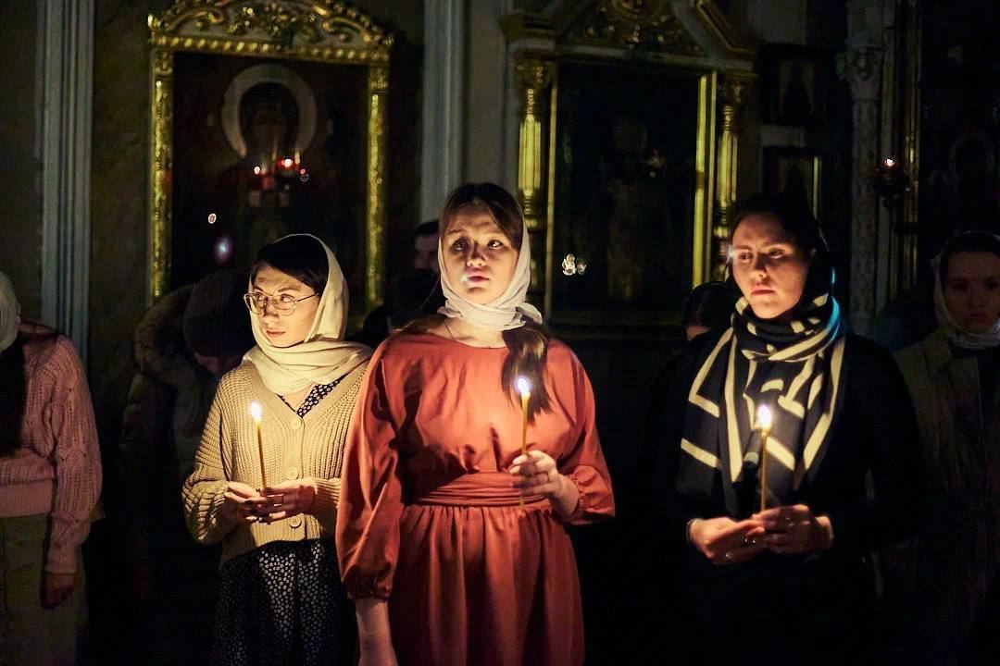
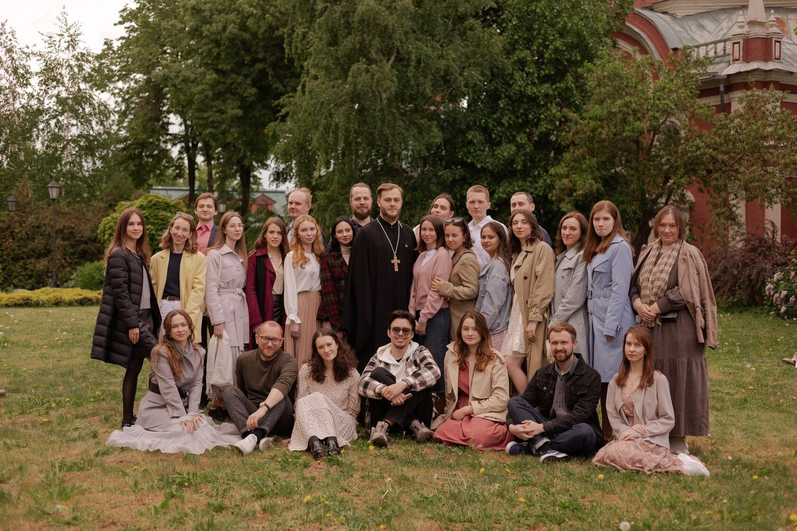
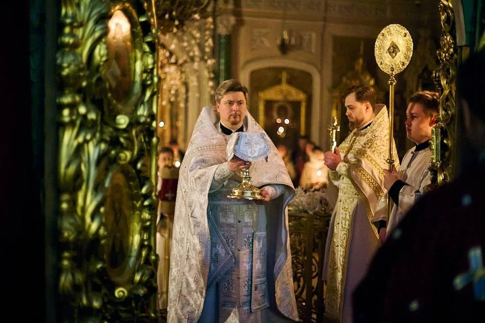
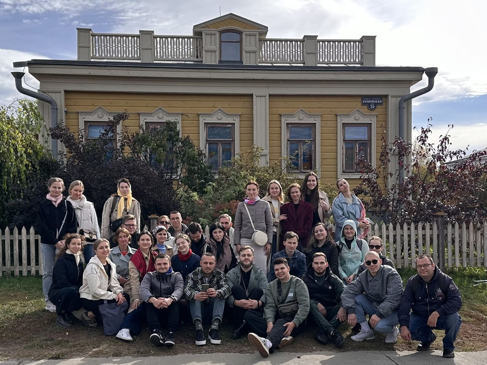
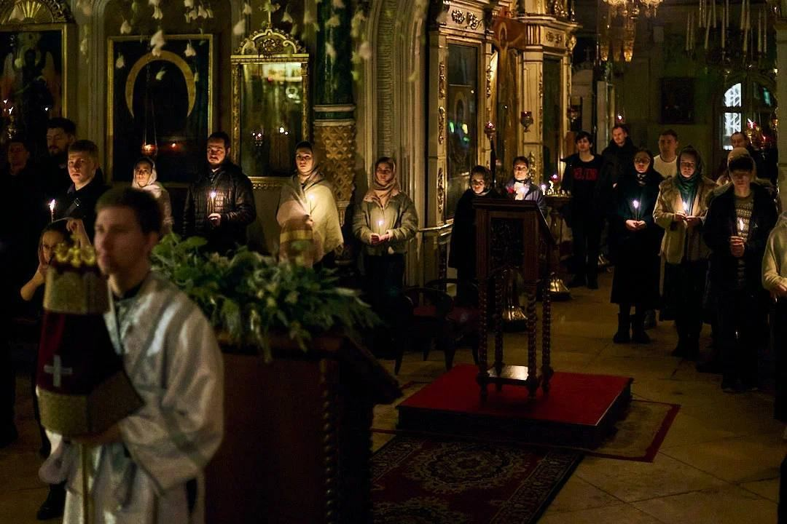
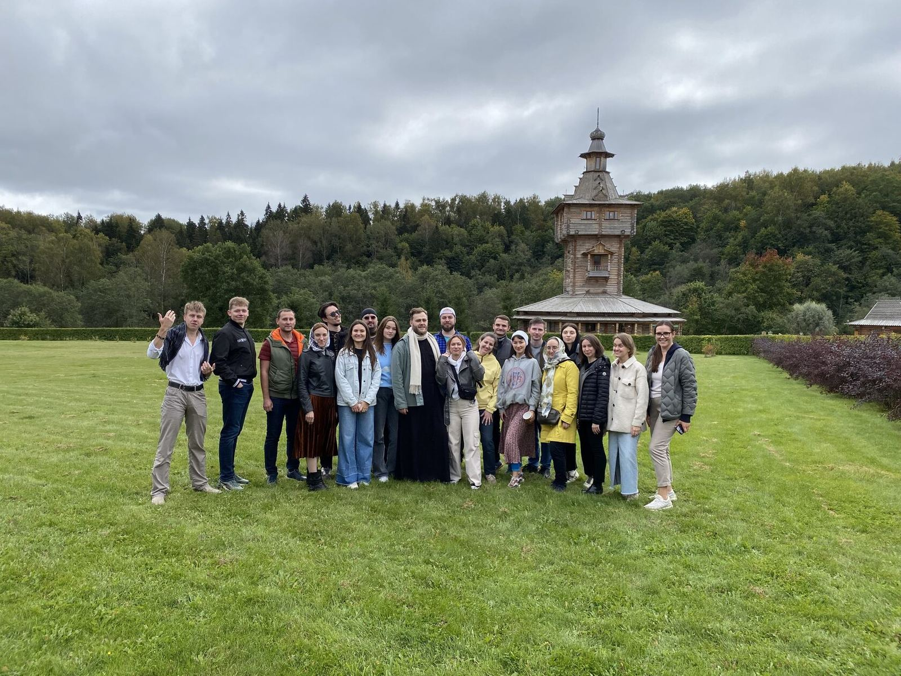
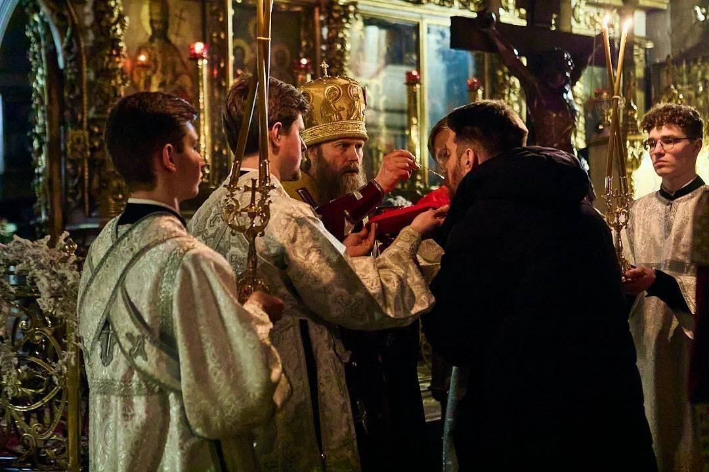
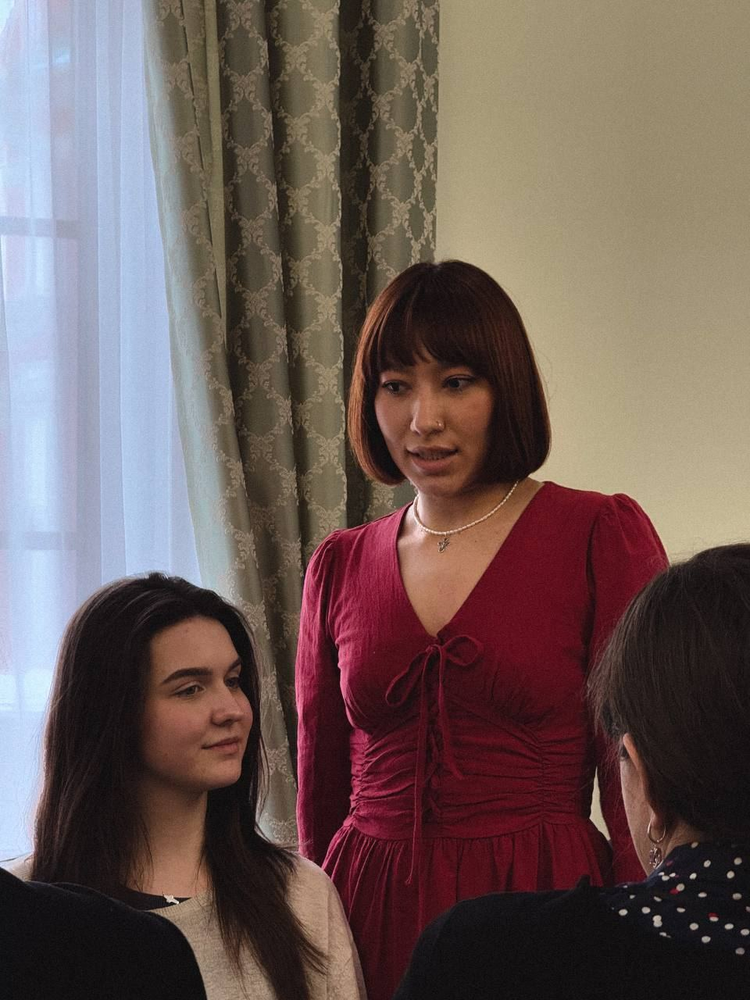
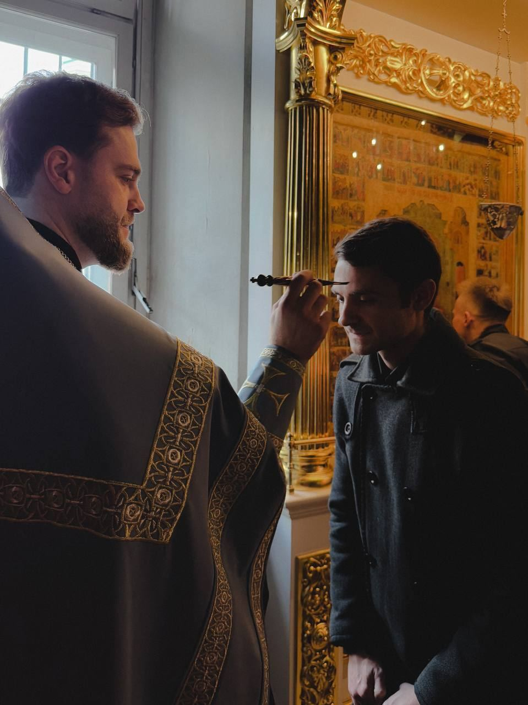
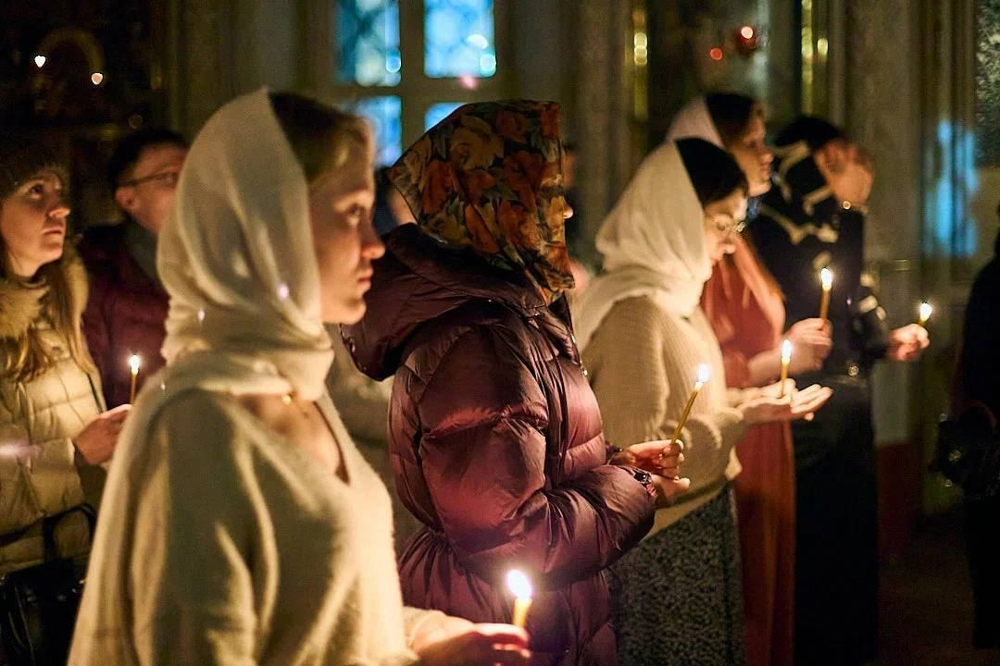
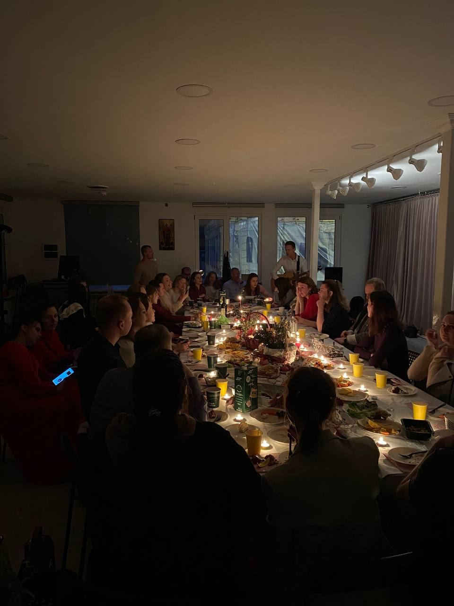
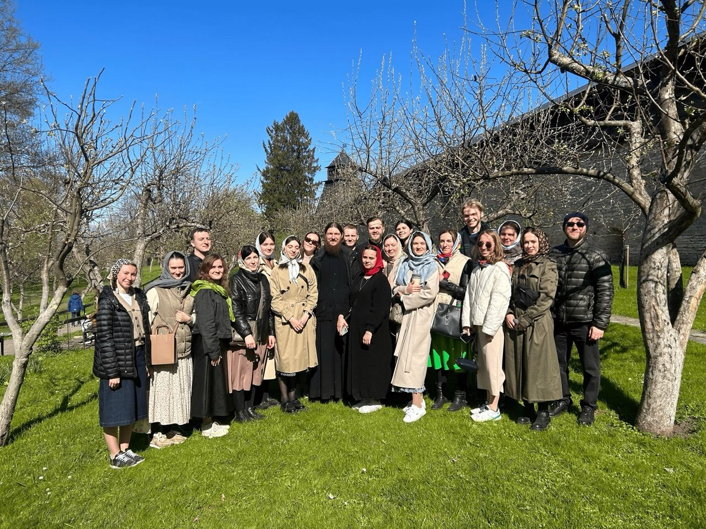
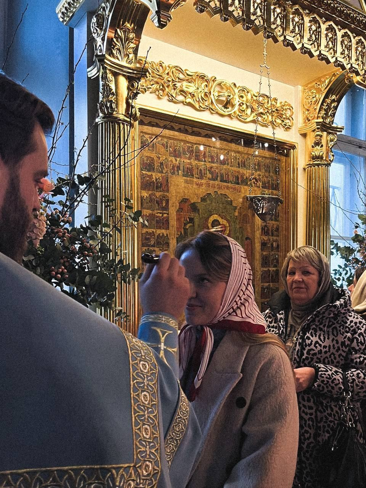
Подпишись на канал — там анонсы всех встреч, поездок и событий сообщества.